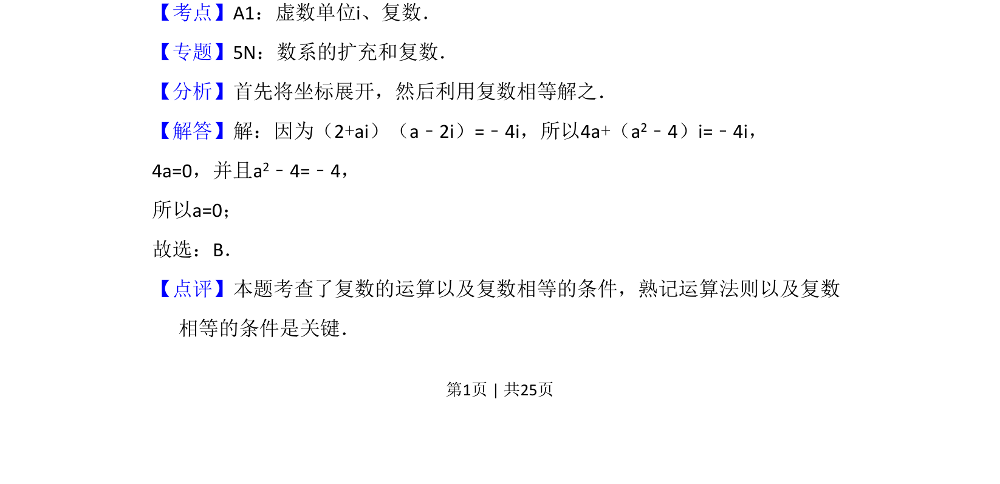

考点：复数乘法 复数相等
该题考查复数的乘法运算及复数相等的条件，通过实部与虚部分别相等求参数。

📄 原 PDF 第 1 页：
素材/真题/吉林/2008-2024·（吉林）数学高考真题/2015年高考数学试卷（理）（新课标Ⅱ）（解析卷）.pdf
2．（5分）若a为实数，且（2+ai）（a﹣2i）=﹣4i，则a=（ ） A．﹣1 B．0 C．1 D．2
【考点】A1：虚数单位i、复数．菁优网版权所有 【专题】5N：数系的扩充和复数． 【分析】首先将坐标展开，然后利用复数相等解之． 【解答】解：因为（2+ai）（a﹣2i）=﹣4i，所以4a+（a2﹣4）i=﹣4i， 4a=0，并且a2﹣4=﹣4， 所以a=0； 故选：B． 【点评】本题考查了复数的运算以及复数相等的条件，熟记运算法则以及复数 相等的条件是关键．